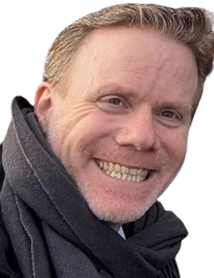

+200 recrutements A→Z en mode agence · Relation client Randstad · Appétence digitale prouvée (SaaS, APIs) · Psychologie du travail CNAM Nantes (IRMR3).
Chez Randstad, en accompagnement direct avec la directrice d'agence Frédérique Ventura, j'ai exercé la double relation client/candidat propre à l'agence : qualifier le besoin entreprise, sourcer, présenter, suivre jusqu'au placement.
Trois ans chez Challancin Prévention Sécurité à piloter 10 à 30 recrutements par mois — sourcing multi-canal, préqualifications téléphoniques, viviers actifs, KPI. Avant ça, 10 ans chez Lidl France à coordonner un réseau commercial de 65 magasins.
En formation psychologie du travail au CNAM Nantes (IRMR3) — évaluation approfondie des motivations, des trajectoires, des signaux faibles dans un profil cadre.

Transformation de données sociales dispersées en lectures de risques — KPI en KAI (prévention, QVCT, GEPP, label senior).
+10 réunions collectives animées avec France Travail (Le Mans, Nantes, Saint-Nazaire). Présentations CODIR 5-10 personnes.
Adapeila · Big-Bang de l'emploi · Collectif "Tout est Possible" · Fondation FACE Atlantique · Mozaïk RH.
"Profil adapté au pilotage d'activité, à la coordination d'équipe et à la conduite du changement."
Ce portfolio illustre une capacité à piloter des équipes, des indicateurs KPI/KAI et des partenariats dans des environnements à enjeux sociaux et territoriaux.
Processus A→Z maîtrisé, ATS pratiqué, viviers à construire immédiatement. La montée en compétence sur le recrutement est derrière moi — pas devant.
Projet SaaS de préparation à l'entretien — intégration APIs LLM, interfaces web React, traitement données. Je comprends ce qu'un développeur full-stack ou un data engineer cherche — pas seulement son CV.
Formation psychologie du travail CNAM Nantes (IRMR3 en cours). Motivations, trajectoire, adéquation culturelle — ce que les outils seuls ne voient pas.
Saint-Herblain (44) · Mobilité Nantes et périphérie